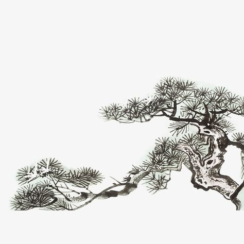

LANDSCRIPT
About
/
Portfolio
Korea National Univ. of Cultural Heritage
LANDSCAPE
WRITTEN IN
CODE.
전통조경학과 21학번 팀 랜드스크립트.
우리는 땅을 읽고(Read), 코드로 다시 씁니다(Script).
전통 조경 공간을 데이터 분석과 GIS 기술로 새롭게 해석합니다.

ESTABLISHED
2025
R Specialist / Researcher
김도현
Kim Do-hyun
데이터 통계 분석 언어 R을 활용하여 전통 조경의 식재 패턴과 공간 데이터를 정량적으로 분석합니다.
Joint Work: Surface Analysis & Research
ArcGIS Specialist / Analyst
이재빈
Lee Jae-been
지리정보시스템(ArcGIS)을 활용하여 대상지의 지형, 수계, 시각적 노출도를 분석하고 매핑합니다.
Joint Work: Surface Analysis & Research